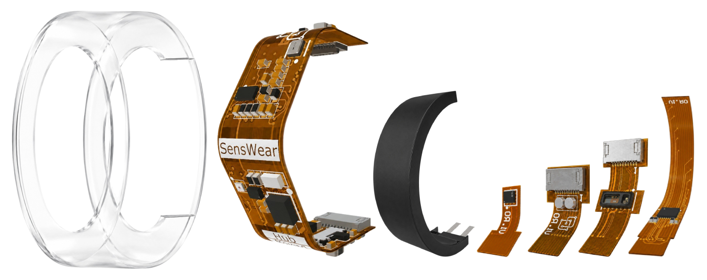
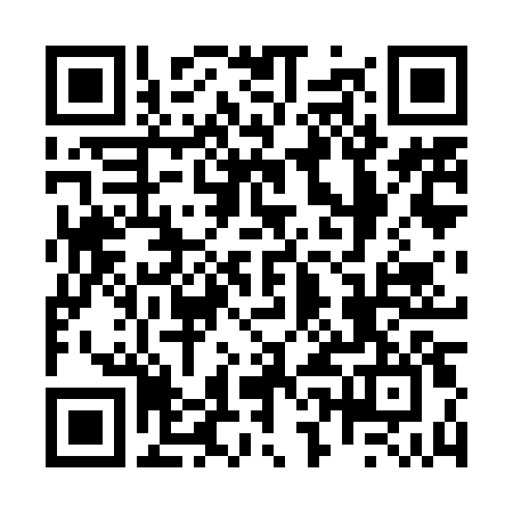

Vascular dynamics
How does pulse transit change
within a person over time?
Thinkin’ Rocks · Nerd Out III
The health insights between the sensors
Concept illustration
Pulse transit time
0.20 m / 0.040 s
A pressure wave travels along the artery.
Illustrative signals and assumed path. Compare corresponding pulse upstrokes. This is wave speed, not blood-cell speed.
Research possibilities
How does pulse transit change
within a person over time?
Do timing and waveforms differ
across locations or sides?
Is that change physiological,
or is the wrist moving?
How do pulse dynamics relate
to breathing and activity?
Research questions, not validated diagnoses. Each use case needs suitable sensors, timing precision and independent validation.
The engineering challenge
estimated shared time = rate × local time + offset
100 Hz gives 10 ms between samples. Interpolation can refine timing, but cannot recover information the measurement lost.

A research invitation
Measure the clocksApply a common reference event.
Quantify residual error and drift.
Record wrist + finger PPGVerify sample times, filtering,
placement and arterial path.
Compare with a referenceRepeat under controlled conditions.
Report uncertainty and failed readings.
The question
Can we see a
physiological change
larger than our
timing error?
PWV can support stiffness research.
Blood-pressure estimation needs its own
calibration and validation.

SensWear
Let’s build the experiment.

Follow SensWear